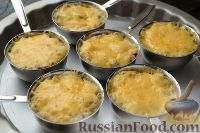
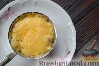

1. Подготовьте все ингредиенты для жюльена.
2. Куриное мясо (окорочка или другие части курицы) необходимо предварительно отварить. Поместите подготовленную курицу в кипящую воду и
варите на небольшом огне до готовности.
3. Отварную курицу достаньте из бульона (куриный бульон можно использовать для другого блюда или заморозить впрок), остудите. Отделите
куриное мясо от костей и нарежьте небольшими кубиками.
4. Шампиньоны нарежьте кубиками и обжарьте на растительном масле.
5. После того как выпарится влага, жарьте грибы еще 5-7 минут, затем снимите с огня.
6. Репчатый лук очистите, нарежьте кубиками и потушите на смеси растительного и сливочного масла.
7. Лук должен не жариться, а томиться на маленьком огне 15-20 минут, до полупрозрачности. Он станет слегка золотистого цвета.
8. Добавьте кусочки куриного мяса и обжаренные грибы в сковороду к луку, перемешайте.
9. Всыпьте муку в сковороду, перемешайте. Посолите и приправьте черным перцем по вкусу.
10. Сметану добавьте в сковороду, перемешайте и тушите курицу с грибами и луком 2-3 минуты после закипания на слабом огне.
11. Подготовьте кокотницы. Выложите в каждую по 2-3 ложки приготовленного жюльена с курицей и грибами. (Если у вас нет кокотниц, можно
использовать керамическую посуду или даже "посуду" из
хлебной булки.)
12. Сверху выложите по 1 ст. ложке твердого сыра, натертого на мелкой терке.
13. Поставьте кокотницы в горячую духовку и запекайте жюльен в духовке при 180 градусах 7-10 минут, чтобы сыр расплавился.

14. Жюльен с курицей и грибами сразу же подавайте к столу порционно, на тарелке, покрытой салфеткой. Ручки кокотниц можно украсить
бумажными папильотками, так как они горячие и можно обжечься.

15. Приятного аппетита!